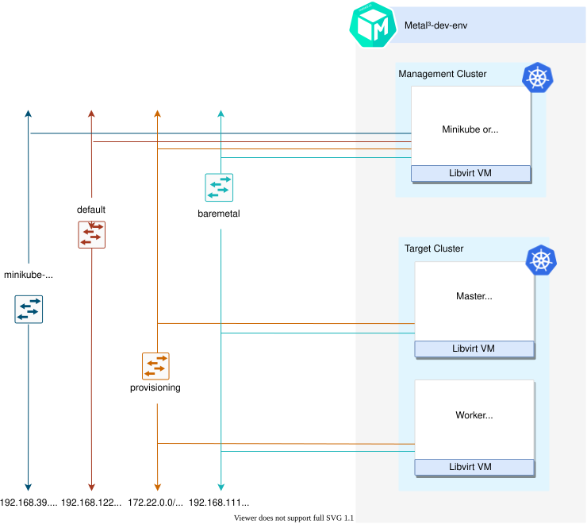

Naming
For the v1alpha3 release, the Cluster API provider for Metal3 was renamed from Cluster API provider BareMetal (CAPBM) to Cluster API provider Metal3 (CAPM3). Hence, from v1alpha3 onwards it is Cluster API provider Metal3.
Ready to start taking steps towards your first experience with metal3.io? Follow these commands to get started!
Naming
For the v1alpha3 release, the Cluster API provider for Metal3 was renamed from Cluster API provider BareMetal (CAPBM) to Cluster API provider Metal3 (CAPM3). Hence, from v1alpha3 onwards it is Cluster API provider Metal3.
Information
If you need detailed information regarding the process of creating a Metal³ emulated environment using metal3-dev-env, it is worth taking a look at the blog post “A detailed walkthrough of the Metal³ development environment”.
This is a high-level architecture of the Metal³-dev-env. Note that for Ubuntu based setup, either Kind or Minikube can be used to instantiate an ephemeral cluster, while for CentOS based setup only Minikube is currently supported. Ephemeral cluster creation tool can be manipulated with EPHEMERAL_CLUSTER environment variable.

The short version is: clone metal³-dev-env and run
$ make
The Makefile runs a series of scripts, described here:
01_prepare_host.sh - Installs all needed packages.
02_configure_host.sh - Creates a set of VMs that will be managed as if they
were bare metal hosts. It also downloads some images needed for Ironic.
03_launch_mgmt_cluster.sh - Launches a management cluster using minikube or kind
and runs the baremetal-operator on that cluster.
04_verify.sh - Runs a set of tests that verify that the deployment completed successfully.
When the environment setup is completed, you should be able to see BareMetalHost (bmh) objects in Ready state.
To tear down the environment, run
$ make clean
Note
When redeploying metal³-dev-env with a different release version of CAPM3, you
must set the FORCE_REPO_UPDATE variable in config_${user}.sh to true.
Warning
If you see this error during the installation:
error: failed to connect to the hypervisor \
error: Failed to connect socket to '/var/run/libvirt/libvirt-sock': Permission denied
You may need to log out then login again, and run make clean and make again.
Whether you want to run target cluster Nodes with your own image, you can override the three following variables: IMAGE_NAME,
IMAGE_LOCATION, IMAGE_USERNAME. If the requested image with name IMAGE_NAME does not
exist in the IRONIC_IMAGE_DIR (/opt/metal3-dev-env/ironic/html/images) folder, then it will be automatically
downloaded from the IMAGE_LOCATION value configured.
Environment variables
More information about the specific environment variables used to set up metal3-dev-env can be found here.
To set environment variables persistently, export them from the configuration file used by metal³-dev-env scripts:
$ cp config_example.sh config_$(whoami).sh
$ vim config_$(whoami).sh
This environment creates a set of VMs to manage as if they were bare metal hosts.
There are two different host OSs that metal3-dev-env setup process is tested on.
The way k8s cluster is running in the above two scenarios is different. For CentOS minikube cluster is used as the source cluster, for Ubuntu a kind cluster is being created.
As such, when the host (where the make command was issued) OS is CentOS, there should be three libvirt VMs and one of them should be a minikube VM.
In case the host OS is Ubuntu, the k8s source cluster is created by using kind, so in this case the minikube VM won’t be present.
To configure what tool should be used for creating source k8s cluster the EPHEMERAL_CLUSTER environment variable is responsible.
The EPHEMERAL_CLUSTER is configured to build minikube cluster by default on a CentOS host and kind cluster on a Ubuntu host.
VMs can be listed using virsh cli tool.
In case the the EPHEMERAL_CLUSTER environment variable is set to kind the list of
running virtual machines will look like this:
$ sudo virsh list
Id Name State
--------------------------
1 node_0 running
2 node_1 running
In case the the EPHEMERAL_CLUSTER environment variable is set to minikube the list of
running virtual machines will look like this:
$ sudo virsh list
Id Name State
--------------------------
1 minikube running
2 node_0 running
3 node_1 running
Each of the VMs (aside from the minikube management cluster VM) are
represented by BareMetalHost objects in our management cluster. The yaml
definition file used to create these host objects is in bmhosts_crs.yaml.
$ kubectl get baremetalhosts -n metal3 -o wide
NAME STATUS STATE CONSUMER BMC HARDWARE_PROFILE ONLINE ERROR
node-0 OK ready ipmi://192.168.111.1:6230 unknown true
node-1 OK ready redfish+http://192.168.111.1:8000/redfish/v1/Systems/a82b2800-e37a-4605-9ed2-ca5ee8bb7857 unknown true
You can also look at the details of a host, including the hardware information gathered by doing pre-deployment introspection.
$ kubectl get baremetalhost -n metal3 -o yaml node-0
apiVersion: metal3.io/v1alpha1
kind: BareMetalHost
metadata:
annotations:
kubectl.kubernetes.io/last-applied-configuration: |
{"apiVersion":"metal3.io/v1alpha1","kind":"BareMetalHost","metadata":{"annotations":{},"name":"node-0","namespace":"metal3"},"spec":{"bmc":{"address":"ipmi://192.168.111.1:6230","credentialsName":"node-0-bmc-secret"},"bootMACAddress":"00:ee:d0:b8:47:7d","bootMode":"legacy","online":true}}
creationTimestamp: "2021-07-12T11:04:10Z"
finalizers:
- baremetalhost.metal3.io
generation: 1
name: node-0
namespace: metal3
resourceVersion: "3243"
uid: 3bd8b945-a3e8-43b9-b899-2f869680d28c
spec:
automatedCleaningMode: metadata
bmc:
address: ipmi://192.168.111.1:6230
credentialsName: node-0-bmc-secret
bootMACAddress: 00:ee:d0:b8:47:7d
bootMode: legacy
online: true
status:
errorCount: 0
errorMessage: ""
goodCredentials:
credentials:
name: node-0-bmc-secret
namespace: metal3
credentialsVersion: "1789"
hardware:
cpu:
arch: x86_64
clockMegahertz: 2694
count: 2
flags:
- aes
- apic
# There are many more flags but they are not listed in this example.
model: Intel Xeon E3-12xx v2 (Ivy Bridge)
firmware:
bios:
date: 04/01/2014
vendor: SeaBIOS
version: 1.13.0-1ubuntu1.1
hostname: node-0
nics:
- ip: 172.22.0.20
mac: 00:ee:d0:b8:47:7d
model: 0x1af4 0x0001
name: enp1s0
pxe: true
- ip: fe80::1863:f385:feab:381c%enp1s0
mac: 00:ee:d0:b8:47:7d
model: 0x1af4 0x0001
name: enp1s0
pxe: true
- ip: 192.168.111.20
mac: 00:ee:d0:b8:47:7f
model: 0x1af4 0x0001
name: enp2s0
- ip: fe80::521c:6a5b:f79:9a75%enp2s0
mac: 00:ee:d0:b8:47:7f
model: 0x1af4 0x0001
name: enp2s0
ramMebibytes: 4096
storage:
- hctl: "0:0:0:0"
model: QEMU HARDDISK
name: /dev/sda
rotational: true
serialNumber: drive-scsi0-0-0-0
sizeBytes: 53687091200
type: HDD
vendor: QEMU
systemVendor:
manufacturer: QEMU
productName: Standard PC (Q35 + ICH9, 2009)
hardwareProfile: unknown
lastUpdated: "2021-07-12T11:08:53Z"
operationHistory:
deprovision:
end: null
start: null
inspect:
end: "2021-07-12T11:08:23Z"
start: "2021-07-12T11:04:55Z"
provision:
end: null
start: null
register:
end: "2021-07-12T11:04:55Z"
start: "2021-07-12T11:04:44Z"
operationalStatus: OK
poweredOn: true
provisioning:
ID: 8effe29b-62fe-4fb6-9327-a3663550e99d
bootMode: legacy
image:
url: ""
rootDeviceHints:
deviceName: /dev/sda
state: ready
triedCredentials:
credentials:
name: node-0-bmc-secret
namespace: metal3
credentialsVersion: "1789"
This section describes how to trigger provisioning of a cluster and hosts via
Machine objects as part of the Cluster API integration. This uses Cluster API
v1alpha4 and
assumes that metal3-dev-env is deployed with the environment variable
CAPM3_VERSION set to v1alpha4. This is the default behavior. The v1alpha4 deployment can be done with
Ubuntu 18.04 or Centos 8 target host images. Please make sure to meet resource requirements for successful deployment:
The following scripts can be used to provision a cluster, controlplane node and worker node.
$ ./scripts/provision/cluster.sh
$ ./scripts/provision/controlplane.sh
$ ./scripts/provision/worker.sh
At this point, the Machine actuator will respond and try to claim a
BareMetalHost for this Metal3Machine. You can check the logs of the actuator.
First check the names of the pods running in the capm3-system namespace and the output should be something similar
to this:
$ kubectl -n capm3-system get pods
NAME READY STATUS RESTARTS AGE
capm3-baremetal-operator-controller-manager-7fd6769dc5-2krhm 2/2 Running 0 10m
capm3-controller-manager-5d968ffd9d-8f6jz 2/2 Running 0 10m
capm3-ipam-controller-manager-6b77b87b46-nrrmt 2/2 Running 0 10m
In order to get the logs of the actuator the logs of the capm3-controller-manager instance has to be queried with the following command:
$ kubectl logs -n capm3-system pod/capm3-controller-manager-5d968ffd9d-8f6jz -c manager
09:10:38.914458 controller-runtime/controller "msg"="Starting Controller" "controller"="metal3cluster"
09:10:38.926489 controller-runtime/controller "msg"="Starting workers" "controller"="metal3machine" "worker count"=1
10:54:16.943712 Host matched hostSelector for Metal3Machine
10:54:16.943772 2 hosts available while choosing host for bare metal machine
10:54:16.944087 Associating machine with host
10:54:17.516274 Finished creating machine
10:54:17.518718 Provisioning BaremetalHost
Keep in mind that the suffix hashes e.g. 5d968ffd9d-8f6jz are automatically generated and change in case of a different
deployment.
If you look at the yaml representation of the Metal3Machine object, you will see a
new annotation that identifies which BareMetalHost was chosen to satisfy this
Metal3Machine request.
First list the Metal3Machine objects present in the metal3 namespace:
$ kubectl get metal3machines -n metal3
NAME PROVIDERID READY CLUSTER PHASE
test1-controlplane-ssd56 metal3://d4848820-55fd-410a-b902-5b2122dd206c true test1
test1-workers-gjcts metal3://ee337588-be96-4d5b-95b9-b7375969debd true test1
Based on the name of the Metal3Machine objects you can check the yaml representation of the object and
see from its annotation which BareMetalHost was chosen.
$ kubectl get metal3machine test1-workers-gjcts -n metal3 -o yaml
...
annotations:
metal3.io/BareMetalHost: metal3/node-1
...
You can also see in the list of BareMetalHosts that one of the hosts is now
provisioned and associated with a Metal3Machines by looking at the CONSUMER output column of the following command:
$ kubectl get baremetalhosts -n metal3
NAME STATUS STATE CONSUMER BMC HARDWARE_PROFILE ONLINE ERROR
node-0 OK provisioned test1-controlplane-ssd56 ipmi://192.168.111.1:6230 unknown true
node-1 OK provisioned test1-workers-gjcts redfish+http://192.168.111.1:8000/redfish/v1/Systems/a1cd44ba-c6db-49ac-bb07-56d4fbc5380f unknown true
It is also possible to check that which Metal3Machine serves as infrastructure for the ClusterAPI Machine
objects.
First list the Machine objects:
$ kubectl get machine -n metal3
NAME PROVIDERID PHASE VERSION
test1-75678f6485-z928j metal3://ee337588-be96-4d5b-95b9-b7375969debd Running v1.21.2
test1-m77bn metal3://d4848820-55fd-410a-b902-5b2122dd206c Running v1.21.2
As a next step you can check what serves as the infrastructure backend for e.g. test1-75678f6485-z928j Machine
object:
$ kubectl get machine test1-75678f6485-z928j -n metal3 -o yaml
...
infrastructureRef:
apiVersion: infrastructure.cluster.x-k8s.io/v1alpha4
kind: Metal3Machine
name: test1-workers-gjcts
namespace: metal3
uid: 9adaec5f-f72b-4674-9f8f-1dc6c9039755
...
Based on the result of the query test1-75678f6485-z928j ClusterAPI Machine object is backed by
test1-workers-gjcts Metal3Machine object.
You should be able to ssh into your host once provisioning is completed.
The default username for both CentOS & Ubuntu image is metal3.
For the IP address, you can either use API endpoint IP of the target cluster
which is - 192.168.111.249 by default or use predictable IP address of the first
master node - 192.168.111.100.
$ ssh metal3@192.168.111.249
Deprovisioning of the target cluster is done just by deleting Cluster and Machine objects or by executing the deprovisioning scripts in reverse order than provisioning:
$ ./scripts/deprovision/worker.sh
$ ./scripts/deprovision/controlplane.sh
$ ./scripts/deprovision/cluster.sh
Note that you can easily deprovision worker Nodes by decreasing the number of replicas in the MachineDeployment object created when executing the provision_worker.sh script:
$ kubectl scale machinedeployment test1-md-0 --replicas=0
Warning
control-plane and cluster are very tied together. This means that you are not able to deprovision the control-plane of a cluster and then provision a new one within the same cluster. Therefore, in case you want to deprovision the control-plane you need to deprovision the cluster as well and provision both again.
Below, it is shown how the deprovisioning can be executed in a more manual way by just deleting the proper Custom Resources (CR).
The order of deletion is:
An additional detail is that the Machine object test1-workers-gjcts is controlled by the the test1 MachineDeployment
object thus in order to avoid reprovisioning of the Machine object the MachineDeployment has to be deleted instead of the Machine object in the case of test1-workers-gjcts.
# By deleting the Machine or MachineDeployment object the related Metal3Machine object(s) should be deleted automatically.
$ kubectl delete machinedeployment test1 -n metal3
machinedeployment.cluster.x-k8s.io "test1" deleted
# The "machinedeployment.cluster.x-k8s.io "test1" deleted" output will be visible almost instantly but that doesn't mean that the related Machine
# object(s) has been deleted right away, after the deletion command is issued the Machine object(s) will enter a "Deleting" state and they could stay in that state for minutes
# before they are fully deleted.
$ kubectl delete machine test1-m77bn -n metal3
machine.cluster.x-k8s.io "test1-m77bn" deleted
# When a Machine object is deleted directly and not by deleting a MachineDeployment the "machine.cluster.x-k8s.io "test1-m77bn" deleted" will be only visible when the Machine and the
# related Metal3Machine object has been fully removed from the cluster. The deletion process could take a few minutes thus the command line will be unresponsive (blocked) for the time being.
$ kubectl delete cluster test1 -n metal3
cluster.cluster.x-k8s.io "test1" deleted
Once the deletion has finished, you can see that the BareMetalHosts are offline and Cluster object is not present anymore
$ kubectl get baremetalhosts -n metal3
NAME STATUS STATE CONSUMER BMC HARDWARE_PROFILE ONLINE ERROR
node-0 OK ready ipmi://192.168.111.1:6230 unknown false
node-1 OK ready redfish+http://192.168.111.1:8000/redfish/v1/Systems/a1cd44ba-c6db-49ac-bb07-56d4fbc5380f unknown false
$ kubectl get cluster -n metal3
No resources found in metal3 namespace.
The baremetal-operator comes up running in the cluster by default, using an
image built from the metal3-io/baremetal-operator repository. If you’d like to test changes to the
baremetal-operator, you can follow this process.
First, you must scale down the deployment of the baremetal-operator running
in the cluster.
kubectl scale deployment capm3-baremetal-operator-controller-manager -n metal3 --replicas=0
To be able to run baremetal-operator locally, you need to install
operator-sdk. After that, you can run
the baremetal-operator including any custom changes.
cd ~/go/src/github.com/metal3-io/baremetal-operator
make run
There are two Cluster API related managers running in the cluster. One
includes set of generic controllers, and the other includes a custom Machine
controller for Metal3. If you want to try changes to
cluster-api-provider-metal3, you want to shut down the custom Machine
controller manager first.
$ kubectl scale deployment capm3-controller-manager -n capm3-system --replicas=0
Then you can run the custom Machine controller manager out of your local git tree.
cd ~/go/src/github.com/metal3-io/cluster-api-provider-metal3
make run
Sometimes you may want to look directly at Ironic to debug something. The metal3-dev-env repository contains a clouds.yaml file with connection settings for Ironic.
Metal3-dev-env will install the unified OpenStack and standalone OpenStack Ironic command-line clients on the provisioning host as part of setting up the cluster.
Note that currently you can use either unified OpenStack client or Ironic client. In this example we are using Ironic client to interact with Ironic API.
Please make sure to export
CONTAINER_RUNTIME environment variable before you execute
commands.
Example:
[notstack@metal3 metal3-dev-env]$ export CONTAINER_RUNTIME=docker
[notstack@metal3 metal3-dev-env]$ baremetal node list
+--------------------------------------+--------+---------------+-------------+--------------------+-------------+
| UUID | Name | Instance UUID | Power State | Provisioning State | Maintenance |
+--------------------------------------+--------+---------------+-------------+--------------------+-------------+
| 882cf206-d688-43fa-bf4c-3282fcb00b12 | node-0 | None | None | enroll | False |
| ac257479-d6c6-47c1-a649-64a88e6ff312 | node-1 | None | None | enroll | False |
+--------------------------------------+--------+---------------+-------------+--------------------+-------------+
To view a particular node’s details, run the below command. The
last_error, maintenance_reason, and provisioning_state fields are
useful for troubleshooting to find out why a node did not deploy.
[notstack@metal3 metal3-dev-env]$ baremetal node show 882cf206-d688-43fa-bf4c-3282fcb00b12
+------------------------+------------------------------------------------------------+
| Field | Value |
+------------------------+------------------------------------------------------------+
| allocation_uuid | None |
| automated_clean | None |
| bios_interface | no-bios |
| boot_interface | ipxe |
| chassis_uuid | None |
| clean_step | {} |
| conductor | localhost.localdomain |
| conductor_group | |
| console_enabled | False |
| console_interface | no-console |
| created_at | 2019-10-07T19:37:36+00:00 |
| deploy_interface | direct |
| deploy_step | {} |
| description | None |
| driver | ipmi |
| driver_info | {u'ipmi_port': u'6230', u'ipmi_username': u'admin', u'deploy_kernel': u'http://172.22.0.2/images/ironic-python-agent.kernel', u'ipmi_address': u'192.168.111.1', u'deploy_ramdisk': u'http://172.22.0.2/images/ironic-python-agent.initramfs', u'ipmi_password': u'******'} |
| driver_internal_info | {u'agent_enable_ata_secure_erase': True, u'agent_erase_devices_iterations': 1, u'agent_erase_devices_zeroize': True, u'disk_erasure_concurrency': 1, u'agent_continue_if_ata_erase_failed': False} |
| extra | {} |
| fault | clean failure |
| inspect_interface | inspector |
| inspection_finished_at | None |
| inspection_started_at | None |
| instance_info | {} |
| instance_uuid | None |
| last_error | None |
| maintenance | True |
| maintenance_reason | Timeout reached while cleaning the node. Please check if the ramdisk responsible for the cleaning is running on the node. Failed on step {}. |
| management_interface | ipmitool |
| name | master-0 |
| network_interface | noop |
| owner | None |
| power_interface | ipmitool |
| power_state | power on |
| properties | {u'cpu_arch': u'x86_64', u'root_device': {u'name': u'/dev/sda'}, u'local_gb': u'50'} |
| protected | False |
| protected_reason | None |
| provision_state | clean wait |
| provision_updated_at | 2019-10-07T20:09:13+00:00 |
| raid_config | {} |
| raid_interface | no-raid |
| rescue_interface | no-rescue |
| reservation | None |
| resource_class | baremetal |
| storage_interface | noop |
| target_power_state | None |
| target_provision_state | available |
| target_raid_config | {} |
| traits | [] |
| updated_at | 2019-10-07T20:09:13+00:00 |
| uuid | 882cf206-d688-43fa-bf4c-3282fcb00b12 |
| vendor_interface | ipmitool |
+-------------------------------------------------------------------------------------+